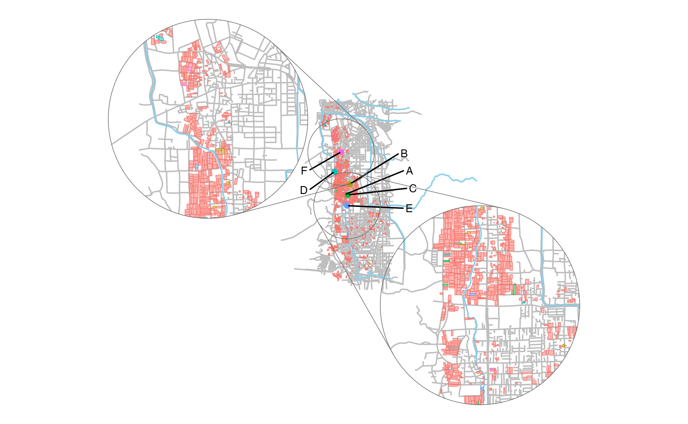

Relationship Between the Residences of Farmers and Their Farmland
Source:vignettes/articles/example4.Rmd
example4.RmdRelationship Between the Residences of Farmers and Their Farmland
You can also visualize the relationship between the residences of farmers and their farmland.
library(dplyr)
library(sf)
library(osmdata)
library(ggplot2)
library(ggmapinset)
library(ggrepel)
db <- combine_fude(d, b, city = "松山", community = "和気|安城寺|長戸|久万ノ台")
set.seed(200)
probabilities <- c(0.97, 0.01, 0.005, 0.005, 0.005, 0.005)
names(probabilities) <- LETTERS[1:length(probabilities)]
db$fude$farmer = factor(sample(names(probabilities),
nrow(db$fude),
replace = TRUE,
prob = probabilities))
farm <- db$fude |>
group_by(farmer) |>
summarise(geometry = sf::st_union(geometry) |> sf::st_centroid()) |>
sf::st_set_crs(4326)
farm_radius <- farm |>
sf::st_transform(crs = sp::CRS("+init=epsg:32632")) |>
sf::st_buffer(dist = units::as_units(1, "km")) |>
sf::st_transform(crs = 4326)
bbox <- sf::st_bbox(db$fude)
streets <- bbox |>
osmdata::opq() |>
osmdata::add_osm_feature(key = "highway",
value = c("motorway", "primary", "secondary", "tertiary",
"residential", "living_street",
"unclassified", "service", "footway")) |>
osmdata::osmdata_sf()
river <- bbox |>
osmdata::opq() |>
osmdata::add_osm_feature(key = "waterway", value = "river") |>
osmdata::osmdata_sf()
inset1 <- configure_inset(
centre = sf::st_geometry(farm)[farm$farmer == "F"],
scale = 3,
translation = c(-4, 1),
radius = 1, units = "km"
)
inset2 <- configure_inset(
centre = sf::st_geometry(farm)[farm$farmer == "E"],
scale = 3,
translation = c(4, -3),
radius = 1, units = "km"
)
farm$x <- sf::st_coordinates(farm)[, 1]
farm$y <- sf::st_coordinates(farm)[, 2]
ggplot(data = db$fude) +
geom_sf(data = streets$osm_lines, colour = "gray") +
geom_sf(data = river$osm_lines, colour = "skyblue") +
geom_sf(aes(fill = farmer, colour = farmer), alpha = .5) +
geom_sf(data = farm, aes(colour = farmer)) +
geom_text_repel(data = farm,
aes(x = x, y = y, label = farmer),
nudge_x = c(.02, .02, .02, -.01, .02, -.012),
nudge_y = c(.01, 0, -.005, -.005, .01, -.005),
min.segment.length = 0,
segment.color = "black",
size = 3,
family = "Helvetica") +
geom_sf_inset(data = streets$osm_lines, colour = "gray", map_base = "none", inset = inset1) +
geom_sf_inset(data = river$osm_lines, colour = "skyblue", map_base = "none", inset = inset1) +
geom_sf_inset(aes(fill = farmer, colour = farmer), alpha = .5, map_base = "none", inset = inset1) +
geom_inset_frame(inset = inset1) +
geom_sf_inset(data = streets$osm_lines, colour = "gray", map_base = "none", inset = inset2) +
geom_sf_inset(data = river$osm_lines, colour = "skyblue", map_base = "none", inset = inset2) +
geom_sf_inset(aes(fill = farmer, colour = farmer), alpha = .5, map_base = "none", inset = inset2) +
geom_inset_frame(inset = inset2) +
theme_void() +
theme(legend.position = "none")
出典：農林水産省「筆ポリゴンデータ（2022年度公開）」および「農業集落境界データ（2022年度）」を加工して作成。